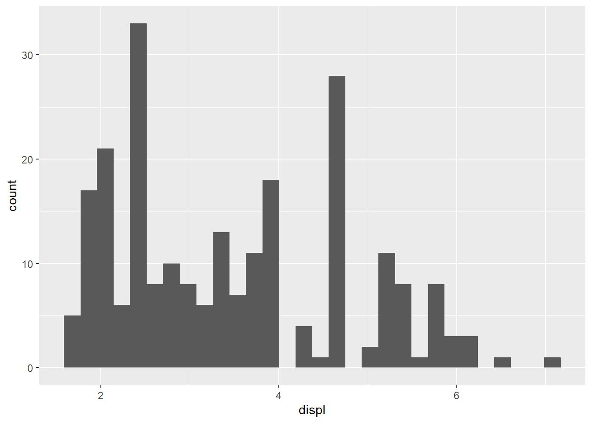
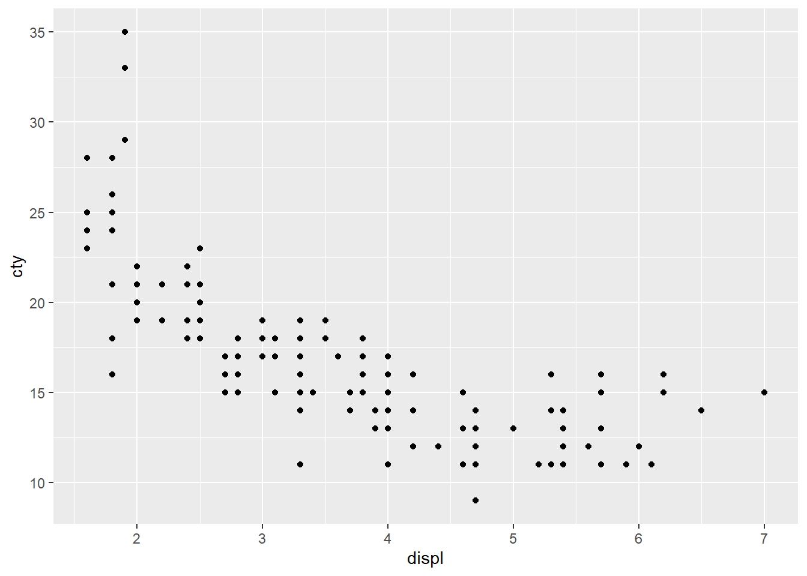
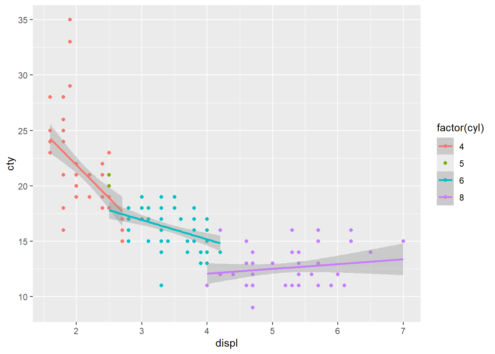
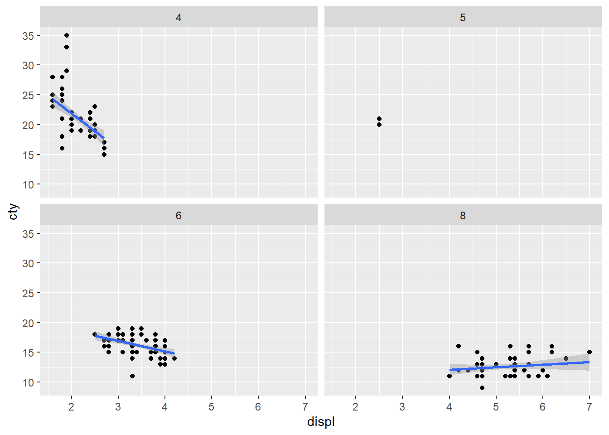
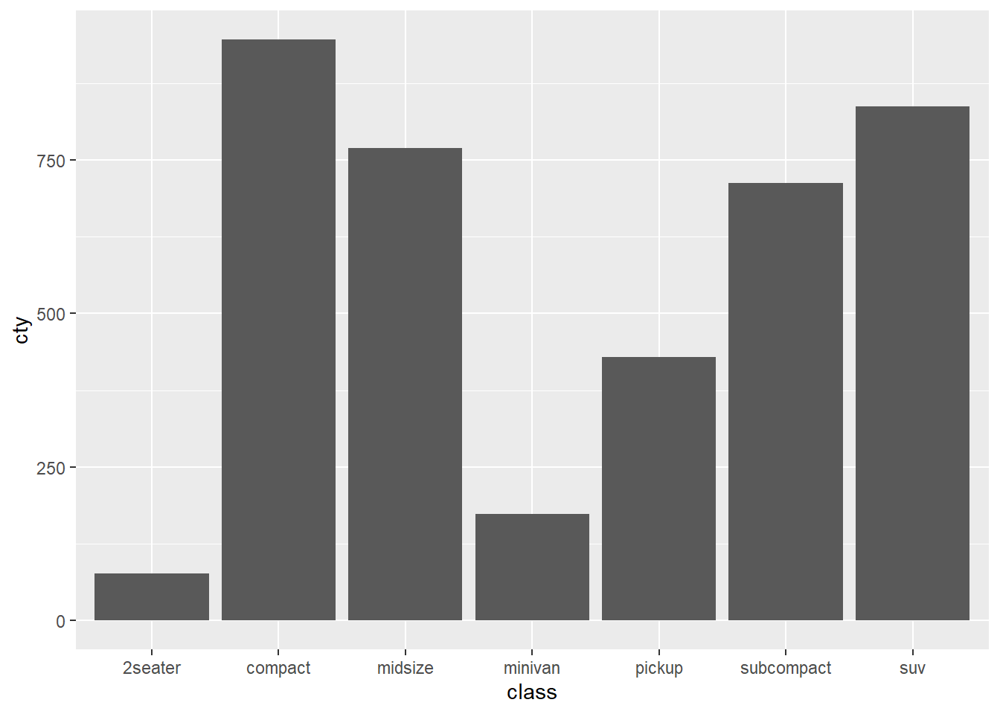
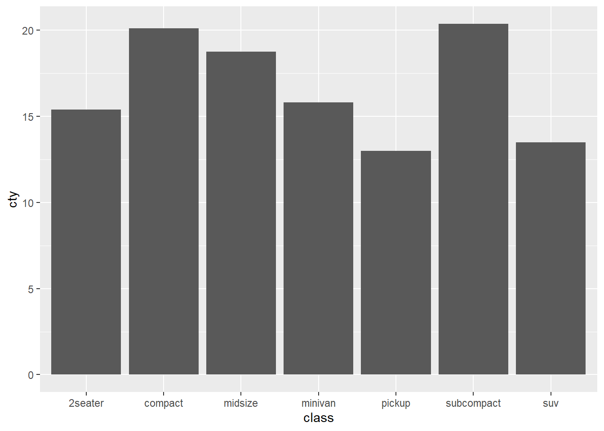
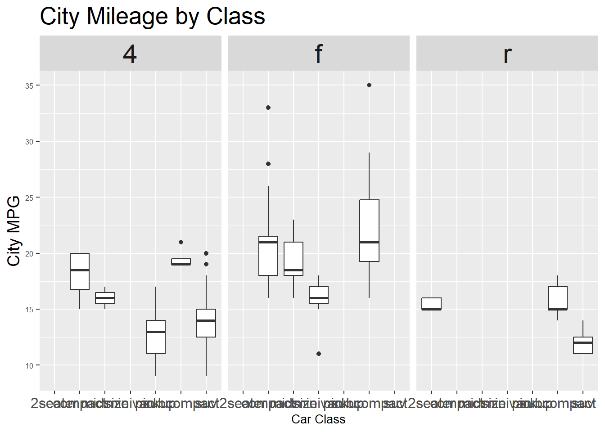
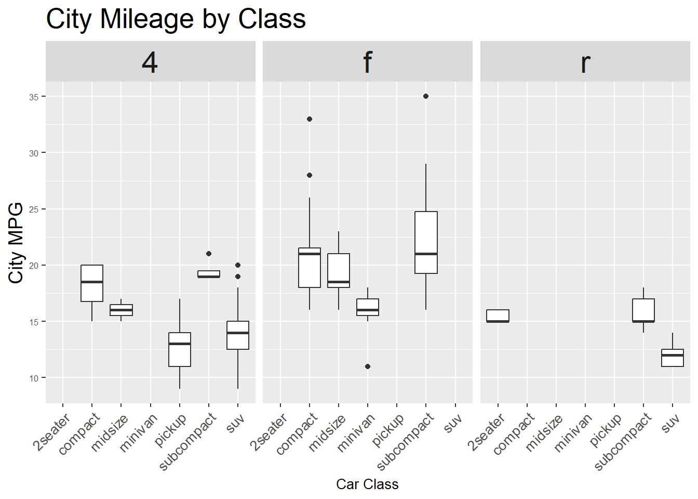
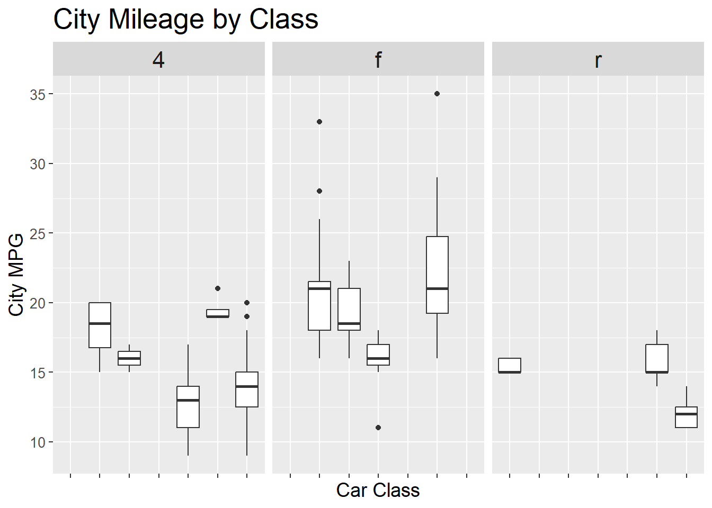

Chapter 12 Week 11: Tidyverseパッケージによるデータの加工と可視化
12.4 データの加工
12.4.1 tidy data
Rが処理しやすいデータ形式のこと
Hadley Wickhamが提唱した考えで以下の三つの定義がある
1つの列が1つの変数を表す
1つの行が1つの観測を表す
1つのテーブルが1つのデータセットだけを含む
昨年、LINEヤフー本社で行われたJapan.Rに来日されてました！
- Japan.R 2024が紀尾井町オフィスで開催されました!!
- tidyでないデータ
untidy_data <- data.frame(
Name = c("Alice", "Bob", "Carol"),
Japanese = c(80, 90, 85),
Math = c(75, 88, 92)
)
gt::gt(untidy_data)| Name | Japanese | Math |
|---|---|---|
| Alice | 80 | 75 |
| Bob | 90 | 88 |
| Carol | 85 | 92 |
- tidyデータ
| Name | Subject | Score |
|---|---|---|
| Alice | Japanese | 80 |
| Alice | Math | 75 |
| Bob | Japanese | 90 |
| Bob | Math | 88 |
| Carol | Japanese | 85 |
| Carol | Math | 92 |
12.4.2 tidyverseパッケージ
- パッケージのウェブサイト（https://www.tidyverse.org/）
⬢ __ _ __ . ⬡ ⬢ .
/ /_(_)__/ /_ ___ _____ _______ ___
/ __/ / _ / // / |/ / -_) __(_-</ -_)
\__/_/\_,_/\_, /|___/\__/_/ /___/\__/
⬢ . /___/ ⬡ . ⬢ 12.4.3 データの変形（縦長 🔄 横長）
- 横長（tidyでない）を縦長に
## Name Japanese Math
## 1 Alice 80 75
## 2 Bob 90 88
## 3 Carol 85 92#install.packages("tidyverse")
library(tidyverse)
tidy <- pivot_longer(
untidy_data, #データ
cols = c(Japanese, Math), #変形する列
names_to = "Subject", #キーの列の名前
values_to = "Score" #値の列の名前
)
tidy## # A tibble: 6 × 3
## Name Subject Score
## <chr> <chr> <dbl>
## 1 Alice Japanese 80
## 2 Alice Math 75
## 3 Bob Japanese 90
## 4 Bob Math 88
## 5 Carol Japanese 85
## 6 Carol Math 92横長に戻す
- 縦長のデータでは行えない分析もあります
## # A tibble: 3 × 3
## Name Japanese Math
## <chr> <dbl> <dbl>
## 1 Alice 80 75
## 2 Bob 90 88
## 3 Carol 85 9212.4.4 dplyrによるデータの操作
このパッケージは
tidyverseパッケージをインストールしていれば使えます。このパッケージを使用することで、毎回変数に保存せずデータを操作できたり、二つのデータを結合したできる。
%>%パイプ演算子を使用する。|>など様々なパイプがあるが、とりあえずは%>%だけを覚えていればよい。パイプ演算子を使ったデータ操作の例（エクセルのデータ処理をRのコードで行うイメージです）
## [1] "manufacturer" "model" "displ" "year" "cyl"
## [6] "trans" "drv" "cty" "hwy" "fl"
## [11] "class"mpg %>%
# 列を絞る
dplyr::select(manufacturer, model, displ, year, cyl) %>%
# 行を絞る
dplyr::filter(manufacturer == "audi") %>%
# year列のデータを100で割ったデータを含むcenturyという新しいデータを作成
dplyr::mutate(century = year / 1000) %>%
# データの最初の5行を表示
head(,5)## # A tibble: 6 × 6
## manufacturer model displ year cyl century
## <chr> <chr> <dbl> <int> <int> <dbl>
## 1 audi a4 1.8 1999 4 2.00
## 2 audi a4 1.8 1999 4 2.00
## 3 audi a4 2 2008 4 2.01
## 4 audi a4 2 2008 4 2.01
## 5 audi a4 2.8 1999 6 2.00
## 6 audi a4 2.8 1999 6 2.0012.4.4.1 filter関数
条件を満たす行のみにデータを絞る
指定した値と同じ
- 数値型の場合は”“入れなくてよい
- 指定した値以外
指定した値より大きい（ > ）/小さい（ < ）
- 以下の例では、cyl列のデータで6よりも大きい値を取り出す命令
## # A tibble: 70 × 11
## manufacturer model displ year cyl trans drv cty hwy fl class
## <chr> <chr> <dbl> <int> <int> <chr> <chr> <int> <int> <chr> <chr>
## 1 audi a6 quattro 4.2 2008 8 auto… 4 16 23 p mids…
## 2 chevrolet c1500 sub… 5.3 2008 8 auto… r 14 20 r suv
## 3 chevrolet c1500 sub… 5.3 2008 8 auto… r 11 15 e suv
## 4 chevrolet c1500 sub… 5.3 2008 8 auto… r 14 20 r suv
## 5 chevrolet c1500 sub… 5.7 1999 8 auto… r 13 17 r suv
## 6 chevrolet c1500 sub… 6 2008 8 auto… r 12 17 r suv
## 7 chevrolet corvette 5.7 1999 8 manu… r 16 26 p 2sea…
## 8 chevrolet corvette 5.7 1999 8 auto… r 15 23 p 2sea…
## 9 chevrolet corvette 6.2 2008 8 manu… r 16 26 p 2sea…
## 10 chevrolet corvette 6.2 2008 8 auto… r 15 25 p 2sea…
## # ℹ 60 more rows=を付けると以上（ >= ）/以下（ <= ）を表す
NAのデータ以外
filter(is.na(cyl))だとNAのデータを絞り込む
複数条件の指定もできる
- 以下では、audi以外の車かつcylが6以上のデータに絞り込んでいる
- 以下では、audi以外の車もしくはcylが6以上のデータに絞り込んでいる
- 以下の例では、どちらの条件にも当てはまらないデータを絞り込む
12.4.4.3 select関数
列の絞り込みを行う
- 複数の列を絞り込める
- 指定した列以外を絞り込む
- 列名を変えながら絞り込む
- データの絞り込みを行わず、列名だけを変更したい場合、
rename関数を使用する
12.4.4.4 mutate関数
列を新しく追加する。同じ列名を指定すれば、既存のデータを上書きすることもできる。
- 既存のcylのデータを100で割った新しいデータをcyl_percentという新しい列を作成。
if_else関数を用いて条件指定を行い、cylが6以上なら「6以上」, それ以外なら「6未満」を含む新たな列を作成。さらに、.after =オプションを用い、列の位置を指定。標準地では、新しく作成された列は、一番最後に追加される。
12.4.4.5 summarize + group_by関数
summarise関数は平均値や分散を計算したりなどデータを集計する関数mutate関数のように、計算したデータを新しい列に格納する
## # A tibble: 1 × 1
## M
## <dbl>
## 1 3.47## # A tibble: 1 × 1
## max
## <dbl>
## 1 7group_by関数というグループ化させる関数と組み合わせることがほとんど- manufacturerごとの平均値を算出
## # A tibble: 5 × 2
## manufacturer M
## <chr> <dbl>
## 1 audi 2.54
## 2 chevrolet 5.06
## 3 dodge 4.38
## 4 ford 4.54
## 5 honda 1.71group_by関数を使用したら、必ずsummarise関数の中で.groups = "drop"を指定してグループ化を解除すること。そうしないと予期せぬエラーにつながったりもする。
12.4.5 dplyrによるデータ結合
二つのデータセットをそれぞれの共通のデータを基に結合する
- 英単語の反応速度の実験などで、後から頻度などの情報を付け加えたいなどかなり重宝します
疑似データの作成
students <- data.frame(
id = c(1, 2, 3, 4),
name = c("Alice", "Bob", "Charlie", "David")
)
scores <- data.frame(
id = c(1, 2, 3, 4),
score = c(80, 90, 85, 70)
)12.4.5.1 inner_join関数
- 二つのデータセットは同じ
idというデータを持っている。このキーをもとにデータを結合します。そしてjoined_dataという新しい変数に保存します。
## id name
## 1 1 Alice
## 2 2 Bob
## 3 3 Charlie
## 4 4 David## id score
## 1 1 80
## 2 2 90
## 3 3 85
## 4 4 70## id name score
## 1 1 Alice 80
## 2 2 Bob 90
## 3 3 Charlie 85
## 4 4 David 70- 列名がそろっていない場合は、以下のように指定すればOK
students <- data.frame(
id = c(1, 2, 3, 4),
name = c("Alice", "Bob", "Charlie", "David")
)
scores <- data.frame(
学籍番号 = c(1, 2, 3, 4),
score = c(80, 90, 85, 70)
)## id name
## 1 1 Alice
## 2 2 Bob
## 3 3 Charlie
## 4 4 David## 学籍番号 score
## 1 1 80
## 2 2 90
## 3 3 85
## 4 4 70## id name score
## 1 1 Alice 80
## 2 2 Bob 90
## 3 3 Charlie 85
## 4 4 David 70inner_joinでは共通していない変数は削除される
# データフレームの作成
students <- data.frame(
id = c(1, 2, 3, 4),
name = c("Alice", "Bob", "Charlie", "David")
)
scores <- data.frame(
id = c(2, 3, 4, 5),
score = c(80, 90, 85, 70)
)## id name
## 1 1 Alice
## 2 2 Bob
## 3 3 Charlie
## 4 4 David## id score
## 1 2 80
## 2 3 90
## 3 4 85
## 4 5 70- 二つのデータセットに共通している
idの2, 3, 4だけがデータとして残っている
## id name score
## 1 2 Bob 80
## 2 3 Charlie 90
## 3 4 David 8512.4.5.2 そのほかのjoin
left_join、right_join関数はそれぞれ左側にあるデータ、右側にあるデータが残る- 残ったデータには
NA（欠損値）になる
- 残ったデータには
## id name score
## 1 1 Alice NA
## 2 2 Bob 80
## 3 3 Charlie 90
## 4 4 David 85## id name score
## 1 2 Bob 80
## 2 3 Charlie 90
## 3 4 David 85
## 4 5 <NA> 70full_joinだと全部が残る
## id name score
## 1 1 Alice NA
## 2 2 Bob 80
## 3 3 Charlie 90
## 4 4 David 85
## 5 5 <NA> 70データの加工や結合を行い（新しい）変数に保存した後は必ずその中身を確認する必要があります。
12.5 ggplot2によるデータの可視化
このパッケージも
tidyverseパッケージに含まれる。従って、library(tidyverse)でggplot2パッケージも使用できる。Grammar of Graphicsの思想に基づいている
可視化という作業を複数の工程に分けて考える
データセットの選別、グラフの選択、データをグラフに割り当てる
ステップ・バイ・ステップでパズルのようにグラフを作り上げていく
慣れるととても使いやすいですが、その分覚える関数が多いので慣れるまでが少し大変です。使用する際にその都度調べたりすればよく、コードを暗記する必要はありません。
例（ヒストグラム）
パイプ演算子（
%>%）でデータを渡したら後は+でグラフを少しずつ作り上げていきます
## `stat_bin()` using `bins = 30`. Pick better value with `binwidth`.
12.5.0.1 散布図 + 直線
- 第一段階：散布図

第二段階：直線を重ねる
method = "lm"で線形モデルで直線を推定
## `geom_smooth()` using formula = 'y ~ x'
第三段階：グループごとに色分け
group =とcolor =で指定を行う。数値のデータはFactor型にすることが必要な場合もある
ggplot(data = mpg, mapping = aes(x = displ, y = cty,
group = factor(cyl), color = factor(cyl))) +
geom_point() +
geom_smooth(method = "lm")## `geom_smooth()` using formula = 'y ~ x'
第四段階：ファセット
- 水準ごとに図を分ける
ggplot(data = mpg, mapping = aes(x = displ, y = cty)) +
geom_point() +
geom_smooth(method = "lm") +
facet_wrap( ~ cyl)## `geom_smooth()` using formula = 'y ~ x'
ggplot2パッケージに限りませんが、いろいろな関数を試して、失敗してという遊びが必要になります。色々なでーたで様々な関数で作図をして遊んでください。
12.5.0.2 統計的処理
- 車のサイズごとに燃費の平均を計算する
## # A tibble: 7 × 2
## class M
## <chr> <dbl>
## 1 pickup 13
## 2 suv 13.5
## 3 2seater 15.4
## 4 minivan 15.8
## 5 midsize 18.8
## 6 compact 20.1
## 7 subcompact 20.4- 平均値を計算せず棒グラフを書くと平均値を描画できていない

stat_summary関数で平均値を計算する

- 事前に平均値を計算しておくのも一つのやり方
12.5.0.4 フォントサイズや向き
図の文字サイズなどは
themesize = 数値で指定。単位はptx軸の変数名が重なってよく見えない
ggplot(mpg, aes(x = class, y = cty, group = class)) +
geom_boxplot() +
facet_wrap(~ drv) + # 駆動方式でfacet（例: f, r, 4）
labs(title = "City Mileage by Class",
x = "Car Class",
y = "City MPG") +
theme(
plot.title = element_text(size = 20), # タイトルのフォントサイズ
axis.title.x = element_text(size = 10), # x軸ラベル
axis.title.y = element_text(size = 14), # y軸ラベル
axis.text.x = element_text(size = 12), # x軸目盛
axis.text.y = element_text(size = 6), # y軸目盛
strip.text = element_text(size = 22) # facetのラベル（ストリップ）
)
- 文字の角度を変更し、重複するのを防ぐ
ggplot(mpg, aes(x = class, y = cty, group = class)) +
geom_boxplot() +
facet_wrap(~ drv) + # 駆動方式でfacet（例: f, r, 4）
labs(title = "City Mileage by Class",
x = "Car Class",
y = "City MPG") +
theme(
plot.title = element_text(size = 20),
axis.title.x = element_text(size = 10),
axis.title.y = element_text(size = 14),
axis.text.x = element_text(size = 10, angle = 45, hjust = 1), # ★ ここで傾ける
axis.text.y = element_text(size = 6),
strip.text = element_text(size = 22)
)
表示させない場合は
element_blank()- x軸のメモリを非表示
ggplot(mpg, aes(x = class, y = cty)) +
geom_boxplot() +
facet_wrap(~ drv) +
labs(title = "City Mileage by Class",
x = "Car Class",
y = "City MPG") +
theme(
plot.title = element_text(size = 20),
axis.title.x = element_text(size = 14),
axis.title.y = element_text(size = 14),
axis.text.x = element_blank(), # ★ x軸のメモリを非表示に
axis.text.y = element_text(size = 10),
strip.text = element_text(size = 16)
)
12.6 GUIでggplotでの作図
esquisseパッケージを使用esquisser(viewer = "browser")を実行すると、ウィンドウが開き、GUIで作図ができる。また、作成した図をRで作成するためのコードも出力することができる。